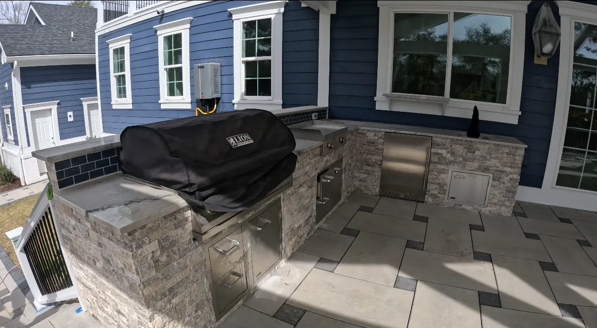

How to Design an Outdoor Living Space: A Charleston Homeowner's Guide
Designing an outdoor living space works best when you make decisions in the right order. Start with how you want to use the space, then move to layout, then structure, then features, then materials. Homeowners who skip straight to picking out a grill or a pergola style often end up redoing decisions later because the layout was never planned around how the space actually gets used.
Start With Purpose

Before anything else, decide what the space is mainly for. A family that wants a spot for weeknight dinners and weekend cookouts needs a different layout than a couple who wants a quiet reading nook or a household that entertains large groups several times a year. This decision shapes everything that follows, from how big the space needs to be to which features actually earn their spot in the design.
It's worth being specific here rather than general. "A place to relax outside" is too broad to design around. "A space where we can cook for six people most weekends and still have room for the kids to play nearby" gives a designer something concrete to work from, and it will change decisions about zone size, kitchen scope, and even where the structure gets placed relative to the house.
Plan the Layout and Zones
Once purpose is settled, map out zones. A cooking zone near the house makes sense for convenience and utility runs, since it keeps plumbing and gas connections shorter and less expensive. A dining zone sits close to the kitchen zone but with enough separation to keep smoke and heat away from the table. A lounge or fire feature zone works well at the far end of the space, creating a sense of a separate room rather than one undefined slab.
Walkways should connect these zones clearly, guiding movement through the space instead of leaving guests to guess where to go. This is a detail that's easy to skip on paper and expensive to fix after construction. A space with no clear path between the kitchen and the fire pit tends to get used less than one where movement through the yard feels natural and obvious.
Choose a Structure

The overhead structure determines how much of the year the space actually gets used. An open pergola provides partial shade and keeps airflow moving, which works well for Charleston's hot, humid summers when you want relief from direct sun without blocking the breeze. A fully covered pavilion provides real protection from Charleston's heavy summer rain, letting you use the space even when the forecast is against you, which matters given how frequently afternoon storms roll through during the warmer months here.
Custom pergolas covers the design options in more depth, including material choices between pressure-treated wood, aluminum, and cedar. Pressure-treated wood tends to be the more affordable, traditional option. Cedar offers a warmer look with good natural resistance to humidity. Aluminum requires the least long-term maintenance and holds up well against coastal conditions, though it comes at a higher price point. Our broader outdoor structures work covers pergolas alongside custom fencing and platform builds, in case your project involves more than just the overhead structure.
Select Features
With the structure decided, layer in features based on your purpose and zones. An outdoor kitchen fits naturally into the cooking zone, and appliance selection should match how often and how seriously you plan to cook outside. A household that grills a few times a month has different needs than one planning to replace most of their summer cooking with the outdoor space entirely.
A fireplace or fire pit anchors the lounge zone and extends usability into cooler months, turning the space from a summer-only feature into something used well into fall. Lighting should be planned alongside these features rather than bolted on afterward, since wiring is far easier to run during construction than after the patio is poured. Landscape lighting covers pathway illumination, architectural uplighting, and full-property systems designed to hold up in Charleston's humidity and salt air.
Full planning guidance for the kitchen piece specifically is covered in our outdoor kitchen planning guide.
Choose Materials for the Lowcountry Climate

Charleston's climate is hard on materials that aren't built for it. Humidity, salt air, and heavy seasonal rain all take a toll over time. Granite and quartzite handle sun and moisture well for countertops, resisting the staining and degrading that lower-grade materials tend to develop within a few seasons. Concrete block and reinforced masonry hold up better than untreated wood for structural elements exposed to the elements, and where wood is used, cedar tends to outperform pressure-treated pine over the long run in this climate.
None of these choices matter long term without a proper foundation underneath. Outdoor foundation work, including grading, footings, and slab work, is what keeps everything above ground level from settling or shifting over time. This is the part of the project that never shows up in a finished photo but determines whether the space still looks and performs the same way five or ten years later. If your property has any slope or drainage issues, retaining walls may also need to be part of the plan before construction on the living space itself begins.
For a broader look at what a full outdoor living installation involves from start to finish, see our outdoor living design and installation guide and our outdoor living spaces hub page.
Common Design Mistakes We See
A few mistakes come up often enough that they're worth calling out directly. The most common is designing the visible features first and treating drainage and grading as a detail to sort out during construction. Water always finds the lowest point in a yard, and if that point ends up being where the patio or kitchen sits, the space will have standing water problems that no amount of nice furniture will fix. Grading and drainage need to be part of the design conversation from day one, not an afterthought handled during construction.
A second common mistake is undersizing the space for how it will actually get used. A patio designed to comfortably seat four people looks fine on paper, but if the household regularly hosts groups of ten, that patio feels cramped and gets less use than a slightly larger one would. It's worth designing for how you entertain most often, not just for daily use by your immediate household, if entertaining is a real part of why you want the space.
A third mistake is choosing a structure style based on a photo from a different climate. A design that looks striking in a dry, mild climate may use materials or an open design that performs poorly against Charleston's humidity and rain. This is why working with a contractor familiar with Lowcountry conditions matters more than working from inspiration photos alone.
Working With a Designer: What to Expect

Once you've thought through purpose, rough layout, and a general sense of structure and features, the next step is an on-site consultation. This is where a designer walks the actual property with you, looks at sun exposure, existing drainage patterns, and access for construction equipment, and starts translating your ideas into something buildable on your specific lot.
Expect the designer to ask pointed questions about how you actually plan to use the space, not just what it should look like. How often do you cook outside? Do you want to be able to use the space during a light rain, or are you comfortable moving inside when weather turns? Do you entertain large groups often, or is this primarily for your household day to day? These questions shape structural and material decisions more than most homeowners initially expect, and answering them honestly upfront leads to a design that actually gets used the way you imagined it rather than one that looks right in a rendering but doesn't fit how you live.
From there, a good designer presents options with tradeoffs explained clearly rather than pushing toward the most expensive choice by default. An open pergola and a fully covered pavilion both have a place depending on your priorities, and understanding those tradeoffs before committing to a direction saves both time and money later in the process.
Permitting and Timeline Considerations
Most pergolas and pavilions require a permit in Charleston-area municipalities, and that approval process should be factored into your project timeline from the start. Ground-level patios generally do not require a permit, but any structure with a roof, along with most retaining walls above a certain height, typically does. A good design partner handles this process for you, but it's worth understanding that permitting adds real time to a project schedule, sometimes several weeks, depending on the municipality and the complexity of the structure.
If you're working toward a specific completion date, such as before a family event or the start of a particular season, build in extra time for this step rather than assuming construction can begin the moment a design is finalized. Rushing permitting or skipping it entirely to hit a deadline creates risk that isn't worth the time saved.
How Long the Design and Build Process Typically Takes

Design timelines vary based on project complexity, but a rough sense of the process helps with planning. Initial consultation and design typically take a few weeks, factoring in site assessment, concept development, and revisions based on your feedback. Permitting, where required, adds additional time on top of design. Construction itself depends heavily on scope. A patio and lighting project moves faster than a full build involving foundation work, a structure, and a kitchen with utility connections.
Weather is also a factor specific to this region. Charleston's rainy season can slow exterior construction work, so timelines built without any weather buffer tend to run into delays. A realistic project timeline accounts for this rather than assuming ideal conditions throughout.
Designing for Entertaining vs. Everyday Use
The layout that works best for a household that entertains often looks meaningfully different from one designed primarily around daily family use, and it's worth being honest with yourself about which describes your household before finalizing a design. A space designed primarily for entertaining tends to prioritize larger dining capacity, more lounge seating spread across the space, and a kitchen scaled to cook for a crowd rather than a family of four. A space designed for daily use tends to prioritize a more compact, efficient layout that doesn't feel oversized on a Tuesday evening when it's just the household using it.
Some homeowners try to design for both scenarios equally, which usually means the space ends up serving neither particularly well. A better approach is to identify which use case happens more often and design primarily around that, while still allowing some flexibility, like movable furniture or a dining area that can expand with additional seating, for the less frequent scenario.
Working With Existing Landscape Elements
Few outdoor living projects start on a completely blank slate. Most properties already have mature trees, existing planting beds, or established grade changes that need to be worked around rather than removed. Mature trees in particular are worth preserving where possible, both for the shade they already provide and because a large tree adds character and value that takes decades to replace if removed. A good design plan treats existing landscape features as assets to design around rather than obstacles to clear, integrating them into the new layout wherever it makes sense.
This is also where working with a full-service landscaping company, rather than a contractor who only handles hardscape or structures, tends to produce a better result. Landscape design and enhancements work alongside the structural and hardscape elements of a project so the finished space reads as one cohesive design rather than a hardscape project with landscaping added around the edges afterward.
Budget Allocation Guidance
Once you have a rough sense of total budget, it helps to think through how that budget should be distributed across the project rather than deciding feature by feature in isolation. Foundation and grading work should be funded fully before anything else, even if it means scaling back a feature elsewhere, since shortcutting this step creates problems that cost more to fix later than they would have cost to do right the first time. After foundation work, the overhead structure and core hardscape tend to be the next priority, since these define the usable space itself. Features like an outdoor kitchen or fire element can be added in a later phase if budget requires it, without compromising the integrity of what's already been built.
Lighting is worth budgeting for even in a phased project, since running wiring during initial construction is far less expensive than adding it after the fact. Even a modest lighting allowance during phase one, with fixtures added later, saves significant cost compared to retrofitting wiring into a finished patio or structure.
Sustainability and Low-Maintenance Design Choices
Homeowners increasingly ask about design choices that reduce long-term maintenance and environmental impact, and a few considerations are worth raising during the design process if this matters to you. Native and drought-tolerant plantings around a new outdoor living space require less irrigation and upkeep than non-native ornamental choices, while still providing the greenery and softening effect a hardscape project needs. Permeable paver options, where appropriate for the site, allow rainwater to filter through rather than running off, which can help with drainage planning on properties already dealing with runoff challenges. Durable material choices, while sometimes a higher upfront cost, reduce the resource and cost impact of replacement and repair down the road, aligning long-term durability with a lower overall environmental footprint over the life of the space.
Design Decisions Homeowners Often Regret and How to Avoid Them
A few decisions come up often enough in conversations with homeowners after the fact that they're worth addressing directly during the design phase rather than after construction. Building a structure too small for how the space actually gets used is one of the most common. It's tempting to size a pergola or patio to current needs, but families grow, entertaining habits change, and a space designed with a bit of extra room tends to age better than one built to the exact minimum needed today.
Skipping lighting planning is another common regret, since retrofitting wiring into a finished patio or structure costs meaningfully more than running it during initial construction, even if you don't install all the fixtures right away. Choosing budget materials for cost savings, particularly for structural or foundation elements, is a third common regret, since the savings tend to be outweighed by repair costs once Charleston's climate takes its toll on undersized or lower-grade materials.
Finally, some homeowners regret not involving a designer early enough in the process, instead making structural decisions on their own before bringing in a professional to finalize the plan. Decisions made without full knowledge of drainage, soil conditions, or permitting requirements sometimes need to be unwound later, which costs more time and money than involving a designer from the earliest planning stages.
Designing for How the Space Will Be Used Across the Whole Year
A design that only accounts for peak summer use tends to underperform the rest of the year, and Charleston's mild fall and winter seasons make year-round design planning worth the extra thought. If a fire feature or fireplace is part of the plan, position it somewhere it can be enjoyed comfortably from within the structure's shelter, not just from an open patio that becomes uncomfortable once temperatures drop and wind picks up. If the pergola or pavilion is the primary shade structure, consider how it performs not just against summer sun but against cooler months when a bit of wind protection matters more than shade.
Some homeowners choose to build in flexible elements specifically to support this kind of year-round use, such as retractable shade or screening options that can adjust with the season, or a design that positions the fire feature within reach of the same seating used for summer dining so the same furniture serves both seasons rather than needing a separate winter setup.
Final Design Checklist Before Your Consultation
Walking into a design consultation with a few things already thought through tends to make the process faster and the result more aligned with what you actually want. Have a clear sense of your primary purpose for the space, whether that's daily family use, regular entertaining, or something in between. Know roughly how many people the space needs to comfortably accommodate on a typical day and on your biggest entertaining occasions. Think through how much of the year you want the space to be usable, since this shapes the structure decision more than almost anything else. Have a rough budget range in mind, even if it's a wide one, since this helps a designer prioritize which features matter most within that range. And take note of anything already in your yard, mature trees, existing beds, or notable grade changes, that you'd like to preserve or work around rather than remove.
Frequently Asked Questions
How big should an outdoor living space be?
Size depends on the number of zones you want. A cooking and dining setup for a family of four can work in a modest footprint, while adding a separate lounge or fire feature zone typically needs more square footage to avoid feeling cramped.
What should I decide before meeting with a designer?
Come in with a sense of purpose (entertaining, daily family use, quiet relaxation) and a rough budget range. Everything else, including layout and material choices, can be worked through together.
Can an outdoor living space be built in phases?
Yes. Many homeowners start with the patio, foundation, and structure, then add the kitchen or fire feature in a later phase.
How do I avoid common design mistakes like poor drainage planning?
Bring up grading and drainage explicitly during your first consultation rather than assuming it will be handled automatically. A good designer addresses this upfront as part of the site assessment, not as an afterthought once construction begins.
Should I pick the structure or the features first?
Structure first. The overhead structure determines how much shade or weather protection the space gets, which affects how comfortably features like a kitchen or fire pit can actually be used throughout the year.
How much lead time should I plan for permitting?
Plan for several weeks of permitting time for any structure requiring approval, on top of the design and construction timeline itself. Building this buffer into your planning avoids unnecessary pressure on the project schedule.
Does Charleston's weather affect the construction timeline?
Yes. Rain during the wetter months can slow exterior construction work, so a realistic timeline should include some buffer rather than assuming uninterrupted good weather throughout the build.
Ready to turn your plan into a design?
Schedule a design consultation with Cramer's Landscaping.
Planning a Project of Your Own?
See everything we design and build, or get in touch to talk through your ideas with Doug and Zach.